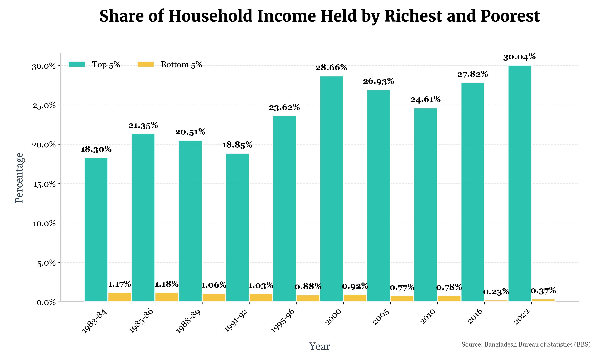

This project provides a visual analysis of the growing income inequality in Bangladesh over the last four decades. Using data from the Bangladesh Bureau of Statistics (BBS), I created a chart to illustrate the share of total household income held by the top 5% and bottom 5% of earners.
Key Findings
In 1983–84, the top 5% of households earned 18.30% of the total household income, while the bottom 5% earned only 1.17%. The situation has worsened over time. The most recent survey, conducted in 2022, shows that the top 5% now earn more than 30% of the total household income, which is quite concerning. Meanwhile, the bottom 5% earn only 0.37%. This clearly indicates that wealth is not being distributed evenly. The rich are becoming richer, while the poor are becoming poorer.
Tools Used
The data was processed and analyzed using Python with the Pandas library. The final visualization was created with Matplotlib, with careful attention to design principles to ensure the chart is both informative and easy to interpret. I have added custom fonts so that it look more visually appealing.